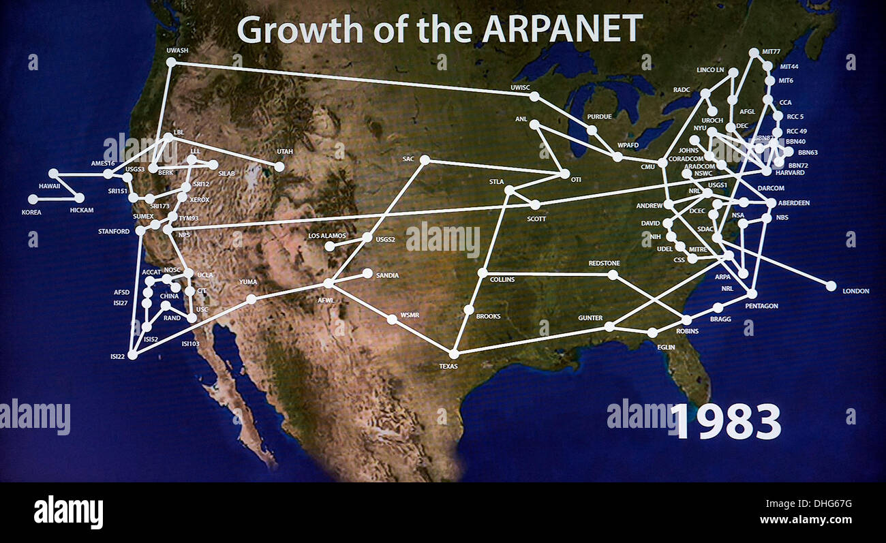

Historia de Internet - Línea del Tiempo
Desde ARPA hasta la era de la nube

Eventos Relacionados
| 1973 - TCP/IP | 1984 - DNS | 1989 - World Wide Web | 1995 - Internet Comercial |
1983 – Internet OficialEl 1 de enero de 1983 marca lo que muchos consideran el verdadero nacimiento de Internet. En esta fecha, ARPANET adoptó oficialmente el protocolo TCP/IP como su estándar de comunicaciones, reemplazando al antiguo protocolo NCP (Network Control Protocol). Esta transición, conocida como el "Flag Day" (Día de la Bandera), fue un evento planificado meticulosamente que requirió años de preparación. La transición a TCP/IP no fue trivial. Durante los años previos, se realizaron extensas pruebas y preparativos. Se desarrollaron implementaciones de TCP/IP para diferentes tipos de computadoras, se escribieron manuales técnicos, y se entrenó a administradores de sistemas en toda la red. El 1 de enero fue elegido porque era un día festivo en Estados Unidos, lo que significaba menos tráfico en la red y más tiempo disponible para solucionar problemas si surgían. La adopción de TCP/IP también facilitó la proliferación de redes a nivel global. Universidades, instituciones de investigación y eventualmente organizaciones comerciales de todo el mundo comenzaron a conectar sus propias redes a esta creciente red de redes. El concepto de Internet como una red global descentralizada finalmente se estaba haciendo realidad. Para finales de 1983, había más de 500 computadoras conectadas a Internet, un número que crecería exponencialmente en los años siguientes.  🔗 Fuente: internetsociety.org/brief-history-internet |